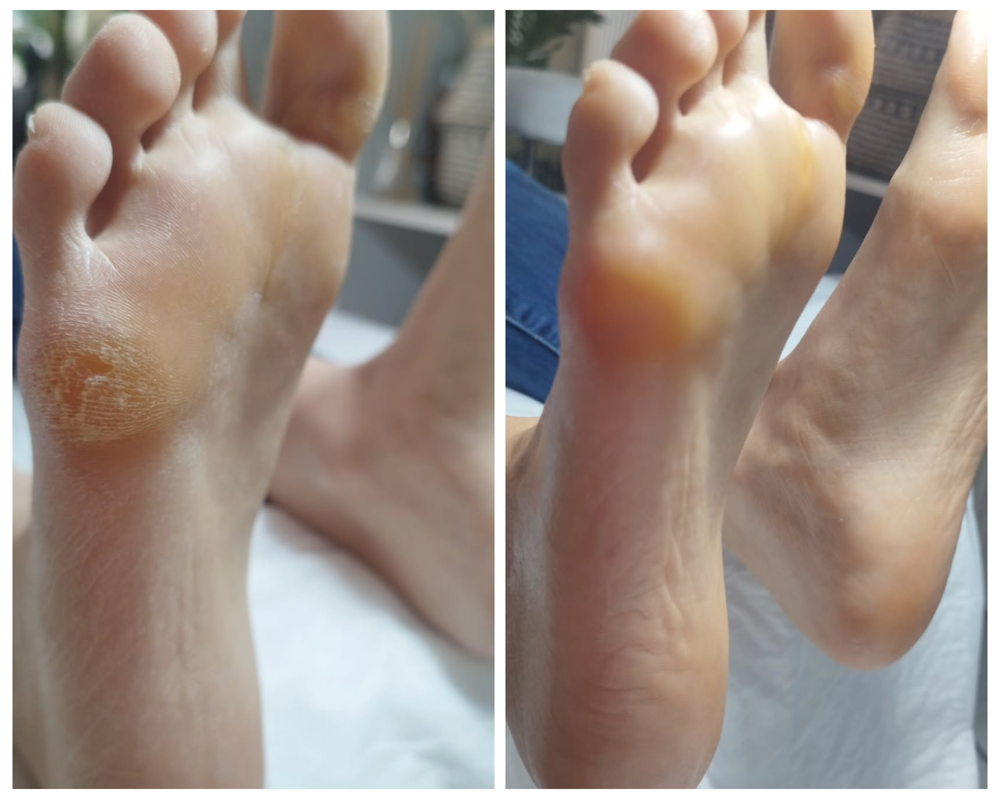
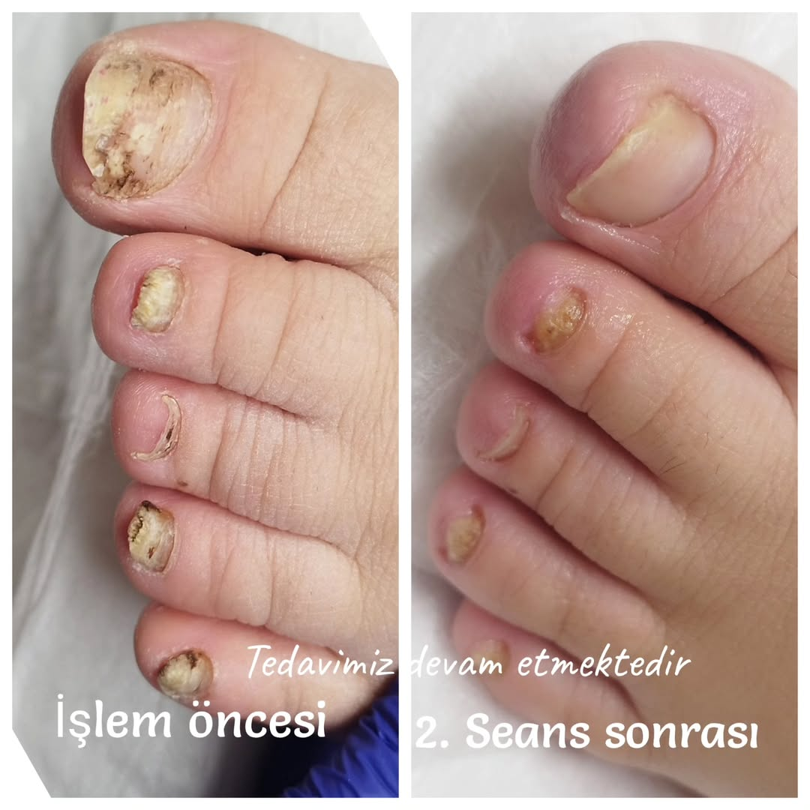
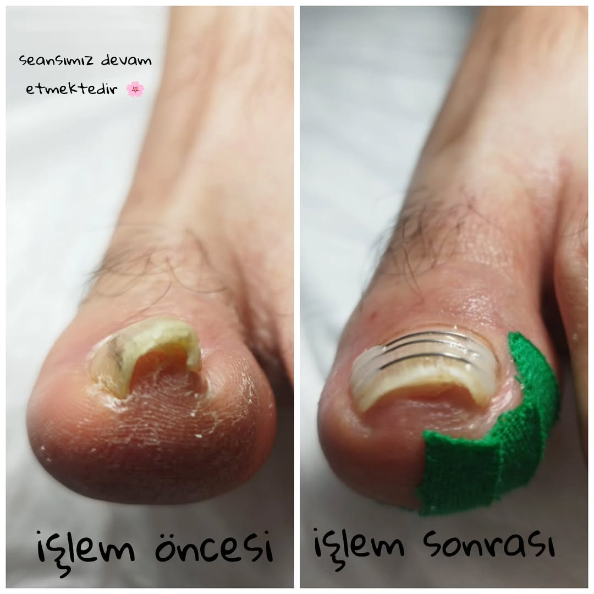
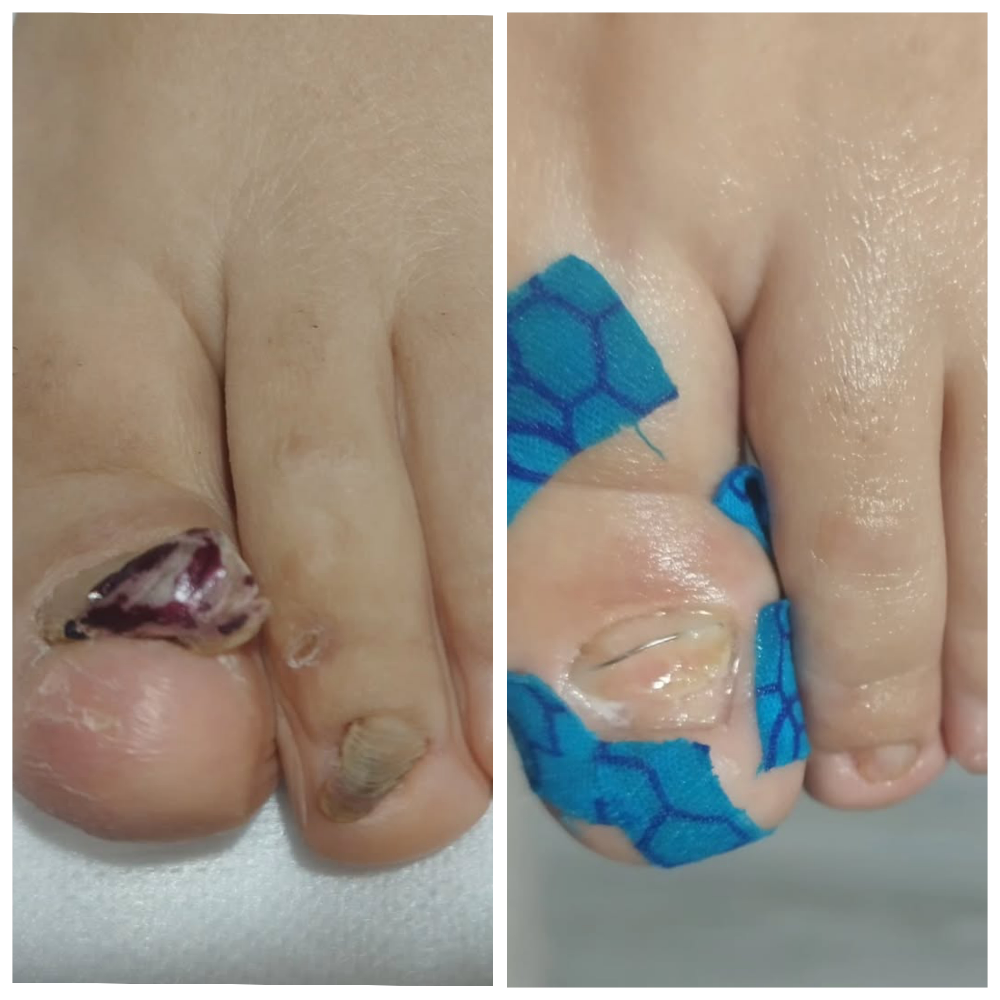
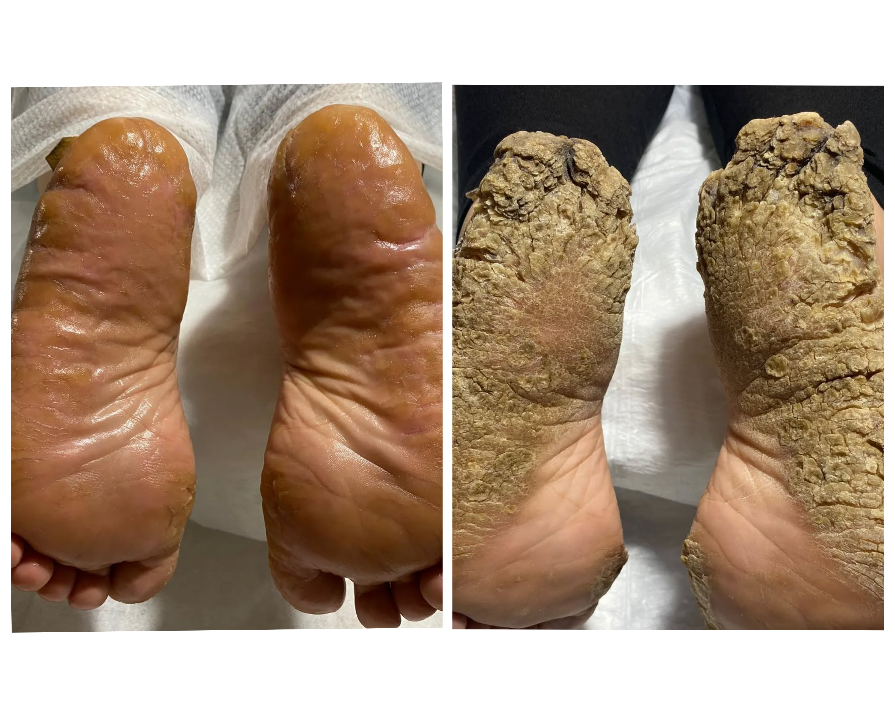

Hizmetlerimiz

Nasır Tedavisi
Ağrısız ve etkili nasır tedavisi.

Medikal Ayak Bakımı
İyileştirici ve bakımcı

Tırnak Batması Tedavisi
Hızlı ve konforlu tırnak batması çözümleri.

Mantar Tedavisi
Hijyenik ve profesyonel mantar tedavisi.

Tel Tedavisi
Kontrol ve onarım amaçlı tel tedavisi.

Topuk Çatlak Tedavisi
Topuk çatlaklarına kalıcı çözümler.